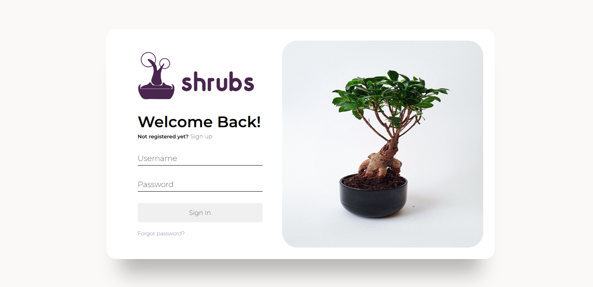
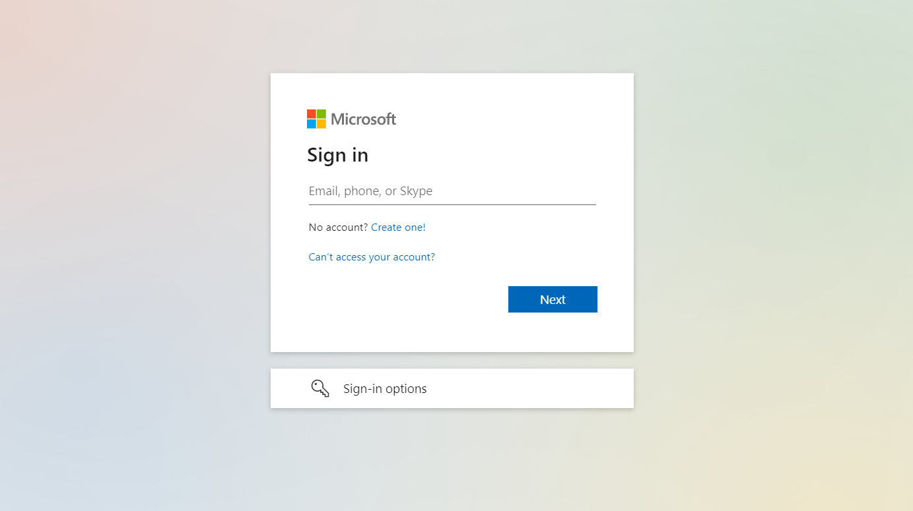

SHRUBS / THE RESEARCH / LOG IN
Wanna log in or sign up?
OUR LOGIN PAGE
Shrubs is a bonsai plant website that offers a wide selection of high-quality
bonsai trees and accessories. With a focus on customer satisfaction, Shrubs is
dedicated to providing a user-friendly shopping experience for bonsai enthusiasts of all levels.
The website features a comprehensive collection of bonsai trees, including popular species like
juniper, ficus, and bougainvillea, as well as rare and exotic varieties. Customers can choose
from a
range of sizes and styles, including tabletop bonsai, small bonsai trees, and large outdoor
bonsai
trees.
The online shopping process at Shrubs is quick and secure, and customers can have their bonsai
trees
and accessories delivered directly to their doorstep. With its extensive selection of bonsai
trees
and exceptional customer service, Shrubs is the perfect destination for bonsai enthusiasts
looking
for high-quality plants and accessories.
Our login page similar to our product page has two sections. One for the sign up if a customer
hasn't already made an account to
shop in our page. The next part is for the log in where people who already have an acoount and
have made a purchase before can log in
find their shopping history and also shop again without any problems.
To get access to the different pages we must click on the sign up if we don't have an account
and if we already have an account we can log in easily.
Sign up
Log in

HYER
Hyer is a revolutionary platform that connects businesses and individuals in real-time for
on-demand work. It provides businesses with access to a pool of talented individuals who can offer
their services immediately, and it provides individuals with immediate job opportunities, ensuring
that everyone has the chance to earn a living. The website is designed to be simple and straightforward,
making it easy for businesses to find the right person for the job and for individuals to find work
that suits their skills and interests.
Hyer is a two-way street that benefits everyone involved. For businesses, it offers a flexible
solution to their staffing needs, allowing them to quickly find the right person for the job and
manage their workforce in real-time. It eliminates the need for traditional hiring processes and
reduces the time and cost associated with finding and training new employees. For individuals, it
offers a way to earn an income on their own terms, providing them with the flexibility to work when
and where they choose.
The login page in website of gohyer is divided in two section. One of the section on the left gives us an form to login into our account
and the section on the right gives us a slider to slide through some pictures made available.

SIMILARITIES BETWEEN THE PAGES
1. Both the pages are divided into two sections. One with the login or sign up form and other with related images.
Gohyer:
Shrubs:
2. Both the pages provide users with the option to login or sign up according to requirement.
Gohyer:

Shrubs:
DIFFERENCES BETWEEN THE PAGES
1. Both the pages are divided into two sections and allow user to login or signup. But in gohyer.com if we click onto signup it redirects
us to a new page where we sign up with office365 account. Whereas, in our page if we aren't already signed up the login portion scrolls to reveal
sign up part.
Gohyer:
Shrubs:
2. In gohyer.com the scrolling feature is featured to scroll through related images. In our page it is used to scroll through the login
and sign up.
Gohyer:
Shrubs:
3. In gohyer.com the scrolling feature is featured to scroll through related images. In our page it is used to scroll through the login
and sign up.
Gohyer:
Shrubs: